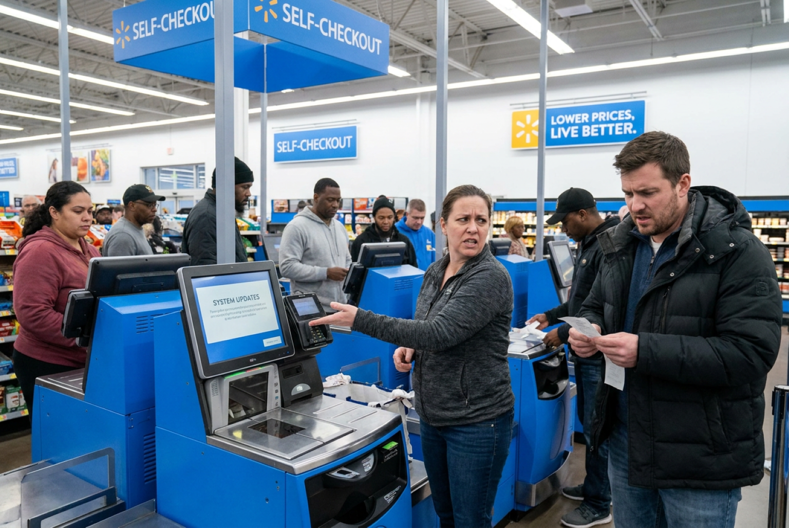

Customer Reactions Grow Following Walmart Checkout Updates
Some Walmart shoppers are reporting noticeable checkout changes in recent weeks as select stores adjust how self-checkout and staffed cashier lanes are being used. The updates do not appear to reflect a single nationwide policy, but customer reports and company statements indicate that some locations are reducing or reorganizing self-checkout access as part of broader store operations and remodeling efforts.
The changes have drawn attention online after shoppers in several markets, including parts of Pennsylvania and New Jersey, reported seeing fewer open self-checkout lanes, additional item limits, or more traditional cashier-operated registers returning to stores. In some locations, customers said self-checkout areas were partially closed or reserved for Walmart+ members, Spark delivery drivers, or smaller purchases.

Walmart has not announced a nationwide elimination of self-checkout systems. Instead, the company says checkout decisions are being made on a store-by-store basis depending on customer feedback, shopping patterns, and operational needs. In a recent statement tied to a South Philadelphia store remodel, Walmart said checkout adjustments were intended to improve customer service and streamline the shopping experience.
Customers are noticing different experiences depending on location. Some shoppers report seeing more staffed registers open than in previous years, while others say longer waits can occur when self-checkout availability is reduced during busy periods. Online discussions also show mixed reactions, with some customers welcoming more cashier-assisted service and others preferring the speed and flexibility of self-checkout.
Industry Context
Retail analysts say many large chains are reevaluating self-checkout operations after years of expansion. Industry reporting has linked the shift partly to concerns over theft, scanning errors, and customer frustration with malfunctioning kiosks or limited staffing around self-checkout areas. Walmart has not publicly attributed all checkout adjustments to a single cause, though experts note that retailers across the industry are reviewing how automated checkout systems affect both customer experience and store operations.

At the same time, Walmart is continuing a broader remodeling effort that includes updates to store layouts, signage, pickup areas, and front-end checkout designs at hundreds of locations nationwide. The company previously announced plans to remodel more than 650 stores during 2026, meaning checkout configurations may continue changing as renovations expand.
What Shoppers May Notice Next
For shoppers, the practical impact may vary depending on where they live and when they shop. Customers may encounter more staffed checkout lanes in some stores, new limits at self-checkout stations, or temporary layout changes tied to remodeling work. Other locations may continue operating large self-checkout areas with few visible differences.
Walmart shoppers planning upcoming trips may want to expect some variation between stores as checkout adjustments continue. The company has indicated that operational decisions will remain localized rather than uniform nationwide, meaning experiences could differ significantly from one location to another.
Additional updates may emerge as more stores complete remodels and Walmart continues testing different checkout approaches in response to customer feedback and store-level conditions.
Recent Timeline
Customers in several regional markets reported seeing reduced self-checkout availability during peak shopping hours.
Retail observers linked the checkout adjustments to ongoing remodeling and operational testing in select locations.
Walmart reiterated that checkout configurations can vary by store depending on local customer demand and staffing needs.